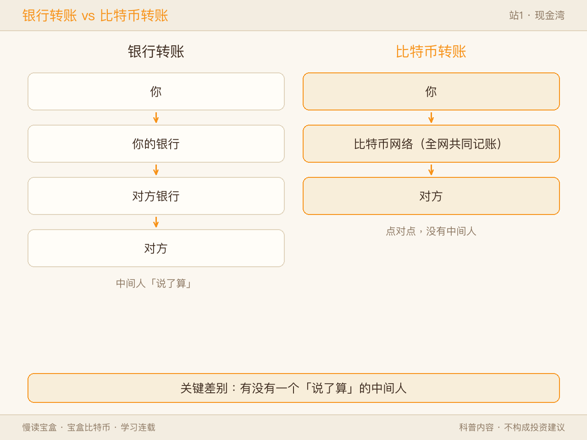
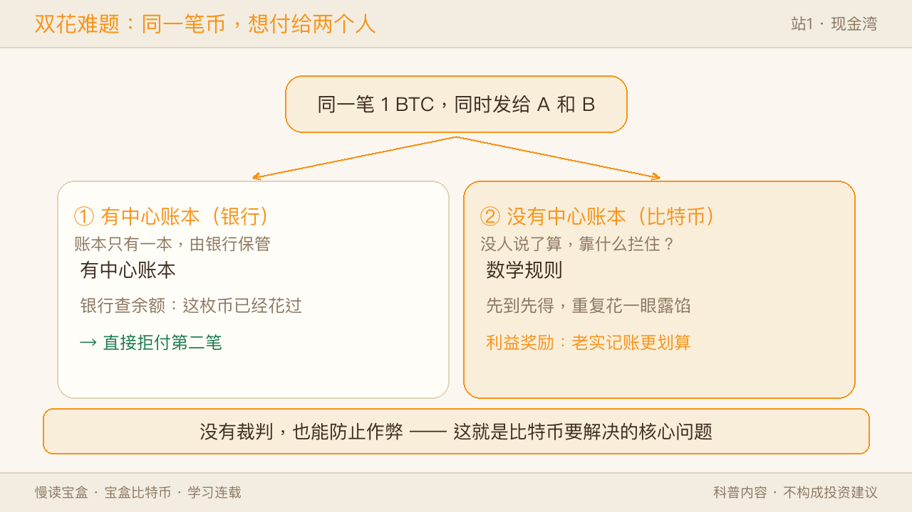
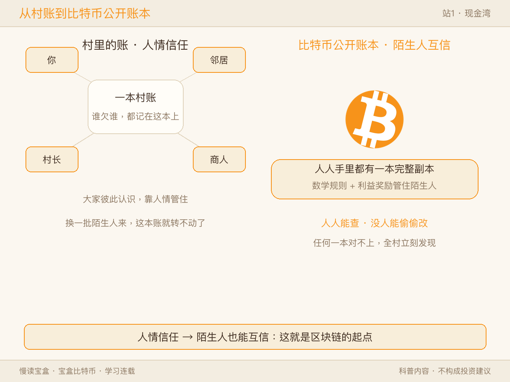
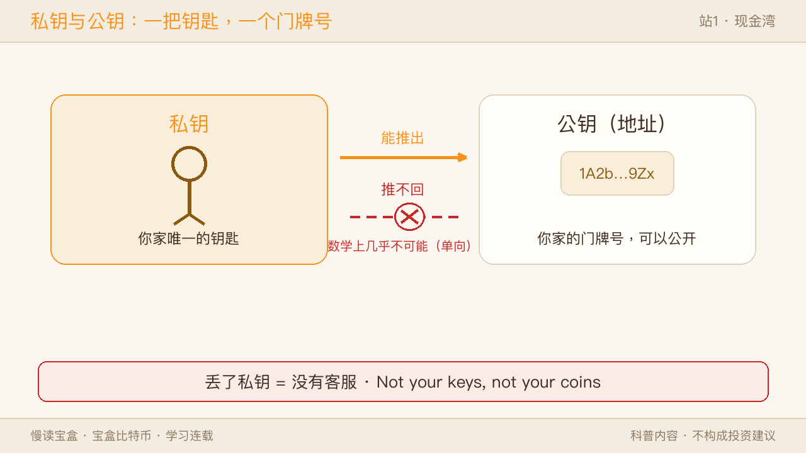
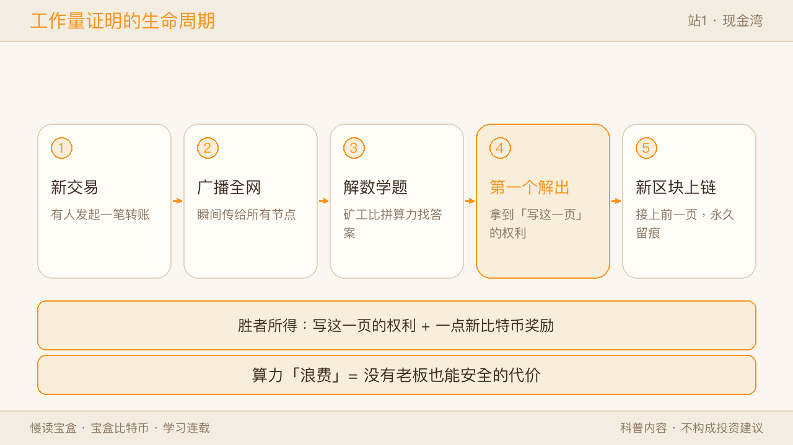
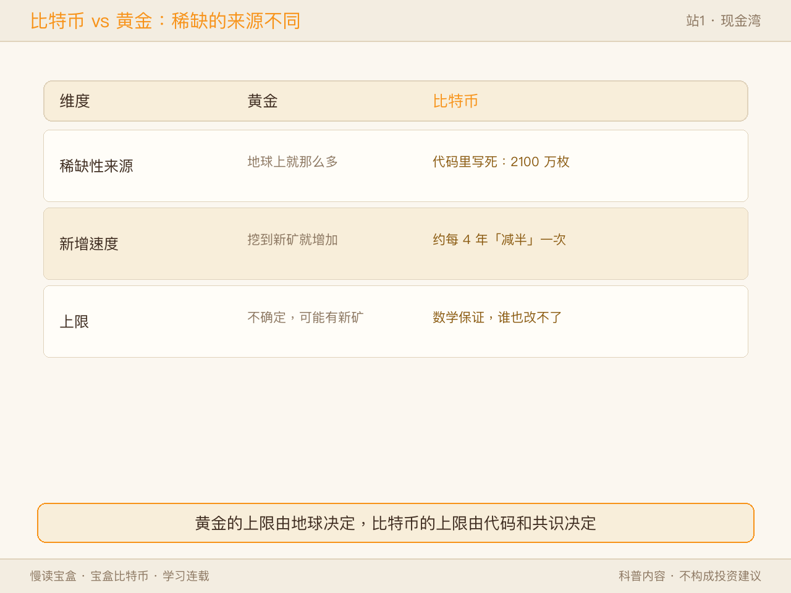
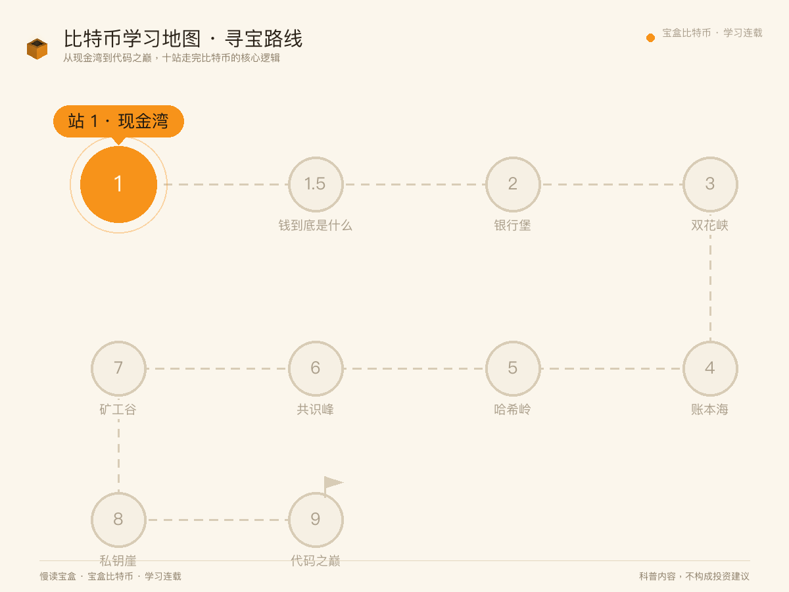

你有没有想过一件事：
微信里你转给朋友的那 200 块，其实根本不是"钱"在动。背后是某家公司，把一笔数字从你账户减掉、加到朋友账户上。
我们早就习惯了——转账，必须有一个"中间人"替我们记账。
那如果，这笔账不交给任何公司、任何银行、任何国家来管，行不行？
2008 年，一个叫「中本聪」的人（或团队），给这个问题写了一份答案。这份答案，叫比特币。
一、先打个比方：比特币像"能发邮件的现金"
比特币常被说成"数字货币"。但这四个字容易误导——你银行卡里的余额，不也是"数字"吗？
更准的比喻是：比特币像"能发邮件的现金"。
✅ 像的地方：你递给朋友一张 100 元，钱直接从你手里到他手里，中间没有银行。比特币想做到的，就是让"在网络上转一笔钱"也像递钞票一样——点对点，不经过任何人。
⚠️ 不一样的地方：你银行卡里的"数字钱"，背后其实还是某家公司在记账；而比特币的"数字钱"背后，没有任何公司。它真正的创新不是"数字"，而是"没有公司也能信得过"。
记住这一句，后面全靠它。

二、它到底在解决什么：同一笔钱，花两次
要理解比特币，得先理解它想解决的那个真问题。
想象你有一张 100 元纸币：你把它付给张三，纸币就到了张三手里，你再也花不了——因为物理上你只有一张。
但数字世界不一样。一个文件可以无限复制。如果你的"钱"只是一个数字文件，你完全可以：把同一笔钱，同时发给张三和李四。
✅ 像的地方：问题本质就是——怎样让一个能复制的数字东西，表现得像"不可复制的实物"？
⚠️ 不一样的地方：现实中，银行用"一个中心账本"来解决这个问题——它说了算，你花没花过它清楚。比特币不要这个中心，它要的是：没有裁判，也能防止有人作弊。
这听起来违反直觉。没有裁判，怎么防作弊？往下看。

📌 边界提示：即便比特币网络上，一笔新交易也要被打包进若干区块、经过若干"确认"才被视为最终。商家或钱包通常要等几个确认，并非"秒到就不可改"。为什么等、等多久，留到「技术原理篇」细讲。
三、公开账本：全村人，每人抄一本
比特币的办法，是把账本"公开"。
想象一个村子：每发生一笔交易，就有人大声念出来，村里每个人都拿出自己的小本子，记上一笔。久而久之，人人手里都有一本一模一样的账。
✅ 像的地方：因为每个人都有副本，任何一个人想偷偷改"你欠我 100"都做不到——其他人的本子对不上。谁也赖不了账。
⚠️ 不一样的地方：村子里大家彼此认识，靠的是"人情信任"；可比特币的记账者，是互不认识、互不信任的陌生人。它不能靠人情，它靠两样东西管住人：数学规则 + 利益奖励。规则让作弊在技术上行不通，奖励让老实记账比作弊更划算。
把"人人有副本"和"陌生人也能互信"叠在一起，就是那条著名的区块链——一笔笔交易打包成"区块"，首尾相连成一条链，谁都能查，谁也改不了已经写进去的记录。

四、你的"钥匙"和"锁"：公钥地址与私钥
那钱怎么证明是"你的"？靠一对密码学钥匙。
- 公钥（地址），像你家的门牌号：你把它告诉别人，别人才能把东西寄到你家。在比特币里，这就是你的"收款地址"。
- 私钥，像你手里唯一的钥匙：只有它能打开门、证明这件东西是你的。
✅ 像的地方：你公开地址收钱，藏好私钥花钱——和"给别人地址收快递、自己拿钥匙开门"一模一样。
⚠️ 不一样的地方：现实中，锁匠能根据你的锁配一把新钥匙；但在比特币里，从地址反推出私钥，在数学上几乎不可能（这是单向的）。更关键的是——你家门钥匙丢了，可以找锁匠换锁；私钥一旦丢了，这笔比特币就永远找不回来，没有任何"客服"能帮你。
所以比特币有句老话：Not your keys, not your coins（不是你的钥匙，就不是你的币）。自由，和责任，是同一枚硬币的两面。

📌 边界提示：私钥责任的另一面还有"继承"问题——如果持有人没把私钥/助记词留给家人就离世，这笔币也会永远封存，没有任何机构能"重置密码"帮你取回。
五、记账权归谁：一场谁都赢不了的"数学竞赛"
既然人人都能记账，那以谁的账本为准？比特币用"算力竞赛"来决定。
往账本添新一页之前，大家要先解一道极难、但答案很好验证的数学题。谁先解出来，谁就获得"写这一页"的权利，还能拿到一点点新比特币作为奖励。
✅ 像的地方：它像一场永不停歇的全球数学比拼，赢家拿到记账权和奖金。
⚠️ 不一样的地方：这场竞赛算出来的结果，本身没有任何实际用途——它就是故意"浪费"算力。可恰恰是这种浪费，构成了安全：想篡改账本，你得赢过全网一半以上的算力，成本高到不划算。所以"浪费"，其实是"没有老板也能安全"的代价。
（这也正是比特币最受争议的地方：耗电。理解它，才能客观看待这场争论——它换来的，是"不需要任何人批准就能运转"。）

📌 边界提示：
1. 比特币坚持用这种"耗电"的工作量证明（PoW）；以太坊等其它链后来选择了更省电的 PoS 等机制——不同链有不同取舍，我们后续会聊。
2. 理想是"人人记账"，但现实中算力常集中在少数矿池，这是"去中心化"理想与真实世界之间的距离，也是后续要讨论的议题。
六、两个特别之处：总量固定，且没有总部
- 总量固定，像黄金，但更狠：黄金稀缺，是因为地球上就那么多；比特币稀缺，是因为代码里写死了——最多 2100 万枚，约每 4 年"减半"一次新增速度。黄金万一挖出新矿，供应还能涨；比特币的上限，是数学保证的，谁也改不了。
- 没有总部，像维基百科，但走得更远：维基百科靠全球志愿者，但背后还有个基金会；比特币连基金会都没有。没有 CEO、没有客服、没有总部。关掉一台电脑，网络照常转；关掉一百台，也一样。

📌 边界提示：2100 万枚听起来少，但 1 枚可拆到 1 亿分之 1（1 聪）。所以"稀缺"说的是代码规则，不是"不够分"。
把这一站的三个主角放进同一张表里，差别一目了然：
| 现金 | 银行转账 | 比特币 | |
|---|---|---|---|
| 谁来记账 | 不用记账，钞票本身就是凭证 | 银行的中央账本 | 全网每人一本公开账本 |
| 转账路径 | 手递手，点对点 | 必须经银行中转 | 点对点，不经过任何机构 |
| 怎么防"花两次" | 钞票给出就到了别人手里 | 银行负责判定和拦截 | 全网验证历史，重复花费直接被拒 |
| 隐私程度 | 无痕，但难远程 | 实名绑定 | 化名：地址公开、不记名 |
| 数量上限 | 央行可以增发 | 存款可以派生 | 代码写死 2100 万枚 |
✅ 像的地方：比特币的转账体验，目标就是"现金的手递手 + 网络的即时达"——这就是"能发邮件的现金"的完整含义。 ⚠️ 不一样的地方：现金丢了没人能找回，比特币私钥丢了也一样；但现金被抢只能认栽，比特币却用数学规则让"抢别人的钱"在技术上几乎不可能。
七、它不等于什么（先帮你避开误会）
- 它不是"稳赚"的东西：价格可以剧烈波动，今天涨明天跌都不稀奇。
- 它不是用来绕开规则的工具：它只是一个中立的技术与货币实验。
- 它不是匿名的：账本是公开的，地址不直接写姓名，但只要地址和你的真实身份产生一次关联（如交易所实名、公开收款），你的全部交易就能被追踪。它更像"化名"，不是"匿名"。
- 它在我国不是法定货币：境内禁止虚拟货币代币发行融资与交易炒作。本文仅作区块链科普，不构成任何投资建议，也请勿视为投资引导。
- 它不要求你"现在就去持有"：对绝大多数人来说，先理解它，比先买它重要得多。
📌 还有一个常被忽略的边界：很多人通过交易所持有比特币，但私钥其实掌握在平台手里。平台出事，你的币也可能拿不回来。"不是你的钥匙，就不是你的币"——在托管场景下，这句话同样成立。
八、为什么有「慢读宝盒」这个号
上面这些，只是起点。
比特币背后，是一整套值得普通人了解的现代货币、密码学与互联网协作知识。可它太容易被带偏：有人把它讲成暴富神话，有人把它讲成骗局——两种说法，往往都没讲清它到底是什么。
「慢读宝盒」想做的，是一份"慢一点、但讲得清"的学习材料：
- 中立客观，不喊单、不预测、不替你做决定；
- 多用比喻把门槛降下来，但每个比喻都讲清"它哪里不一样"——因为真正的理解，往往住在"不一样"里；
- 对重要概念，不只给一个视角，尽量从"你看到的"和"系统实际发生的"两个视角拆；
- 每篇带风险提示，把"认知风险"放在优先位置。
简单说：这里不催你做任何事，只帮你真正"懂"。
九、一张比特币学习地图：后面我们会聊什么
为了不让你"看一篇是一篇"，宝盒把整个比特币知识体系画成了一张比特币地图。公众号会沿着这张地图，一篇一篇往下讲。先给你看全貌：
🗺️ 慢读宝盒 · 比特币学习地图

- 【为什么篇 · 货币哲学】 钱到底是什么？我们为什么"信任"一张纸？没有银行，怎么防止一笔钱花两次？
- 【怎么运转篇 · 技术原理】 区块链是什么账本？公钥私钥怎么保护你？挖矿到底在挖什么？
- 【它值什么篇 · 货币经济学】 2100 万枚和"减半"是什么意思？价格为什么上蹿下跳？它算不算"数字黄金"？
- 【怎么守住篇 · 安全避坑】 私钥丢了为什么找不回？常见骗局长什么样？钱包怎么选？
- 【它在哪用篇 · 生态前沿】 闪电网络能让比特币小额快付吗？稳定币是什么？区块链世界还有哪些东西？
除了主线连载，宝盒还会穿插三个轻栏目，保持更新、也和你互动：
- 【宝盒问答】 回答大家问得最多的问题；
- 【事件笔记】 对行业重大事件做客观记录（只陈述事实，不判断、不喊单）；
- 【误区澄清】 把"比特币 = 骗局 / = 暴富"这类误解，一条条拆开讲清。
十、下一篇，我们从"钱"聊起
下一篇，宝盒想先跟你聊一个更根本的问题：
《钱到底是什么？从贝壳、金子，到屏幕上的数字》
搞懂"钱"的本质，你才会明白比特币为什么是一种"不一样的钱"，而不是"另一种用来炒的东西"。
如果你也觉得"应该搞懂比特币，但一直没找到靠谱的入口"——关注慢读宝盒，我们从 0 开始，一篇一篇，把它讲清楚。
觉得有用，点个「在看」；有问题，评论区见 👇